Renault Fluence Z.E. y Kangoo Z.E., presentación y prueba en Lisboa
Fri, 25 Nov 2011 10:00:00 GMT
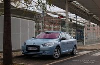
Nuestro blog de movilidad alternativa, Motorpasión Futuro, se ha ocupado de cubrir por completo la reciente presentación de los nuevos vehículos eléctricos de Renault en Lisboa. Es el momento de conocer sus secretos y responder a esas preguntas que antes no tenían respuesta, como equipamiento, precios de alquiler de baterías, etc.
Por un lado tenemos al Fluence Z.E. (parte 1, parte 2, parte 3), una berlina de segmento C, con 317 litros de maletero, cuyo precio arranca en 19.800 euros (incluyendo ayudas). Es el coche eléctrico “de verdad” más barato que hay en España, aunque el alquiler de las baterías y sus precios van aparte.
Por el otro lado, la Kangoo Z.E. (parte 1, parte 2), una furgoneta para ocio y trabajo que se ofrece en versión de carga o mixta. Los profesionales podrán comprarla a partir de 14.000 euros (descontando IVA y ayudas), baterías aparte mediante alquiler. ¿Sabíais que puede tener una calefacción de gasóleo para llegar a más de 200 km de autonomía sin pasar frío en invierno?
Estos dos modelos pueden ayudar sustancialmente a animar las ventas de eléctricos en nuestro país. Las previsiones no se cumplieron, y en 2011 no hemos llegado a 2.000 vehículos. A ver el año que viene, con precios razonables y siendo rentabilizables en condiciones reales. Todo esto y mucho más, en Motorpasión Futuro.

AC Schnitzer ACS6 Coupé, un 650i de 540 CV
Fri, 25 Nov 2011 07:00:26 GMT

El preparador alemán AC Schnitzer, con base en Aachen, ha desvelado el paquete de modificaciones (estéticas, mecánicas y también en el interior) ACS6 para la tercera generación del BMW Serie 6 Coupé (F13) que presentará en el Salón de Essen.
Exteriormente recibe un kit aerodinámico con spoiler delantero más bajo, labio de la tapa del maletero y un difusor, también más bajo. La parrilla cromada o las llantas ligeras de entre 19 y 21 pulgadas en color plata o bicolor, rematan su apariencia, que resulta un poco demasié, sobre todo por las llantas.
De cualquier manera, lo importante lo encontramos bajo el capó. El 4.4 litros V8 del BMW 650i aumenta su potencia hasta los 540 CV (133 adicionales) y el par motor máximo hasta los 750 Nm. Gracias a esto acelera de 0 a 100 km/h en 4,3 segundos y alcanza los 325 km/h. Tras la mejora el preparador nos ofrece también un seguro de vida en forma de pinzas de ocho pistones para los frenos delanteros.
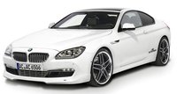
El interior destaca por el volante deportivo, una cubierta de aluminio para el mando del sistema iDrive, pedalera también de aluminio y alfombrillas de ciertopelo terciopelo. Los buenos de AC Schnitzer nos han dejado un vídeo para verlo en movimiento.
Galería de fotos
(Haz click en una imagen para ampliarla)
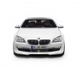
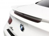
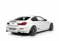
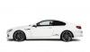
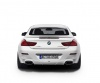
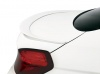
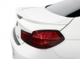
Vídeo | Youtube
Vía | GT Spirit
En Motorpasión | BMW Serie 6 Coupé, llega la tercera generación
Todo lo que necesitas saber sobre el Gran Premio de Brasil
Thu, 24 Nov 2011 21:49:20 GMT
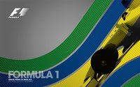
Este fin de semana, la Fórmula 1 baja el telón de la temporada 2011. El Gran Premio de Brasil servirá para poner el broche final a una temporada que pasará a la historia por el dominio de Sebastian Vettel y su Red Bull, y que olvidaremos casi por el mismo motivo. El alemán nos ha robado casi cualquier emoción. Sobre todo teniendo en cuenta que veníamos de una de las temporadas más interesantes de la historia, la de 2010. Aunque en honor a la verdad, el Gran Premio de Brasil de 2010 no fue uno de los mejores en este sentido.
El Autódromo José Carlos Pace de Sao Paulo, también conocido como Interlagos, es una de las catedrales de la Fórmula 1. Un trazado a la vieja usanza y que aprovecha todos los desniveles del terreno para ofrecernos una montaña rusa. Un circuito que cuando llueve se convierte en uno de los más complicados y peligrosos del calendario. Incluso su asfalto está pensado para canalizar los pequeños riachuelos que se crean cuando llueve copiosamente. De momento, para el domingo se esperan chubascos.
Otra de las cosas por las que el Gran Premio de Brasil será particular es por la elección de neumáticos de Pirelli. El fabricante italiano utilizará unos nuevos compuestos blandos, probados ya en varias ocasiones esta temporada, y que se unirán a un compuesto duro experimental que los equipos probarán durante los entrenamientos libres del viernes. Por cierto, no olvidéis que al desarrollarse al otro lado del Atlántico, el Gran Premio de Brasil se convierte en una carrera vespertina. Para que no te pierdas nada aquí tienes los horarios.
En Brasil también veremos como algunos pilotos se despiden de sus actuales equipo o incluso de la Fórmula 1 mientras otros llegan, aunque no parezca que sea para quedarse. Entre los últimos, Jan Charouz estará con HRT el viernes mientras que Luiz Razia hará lo propio con Team Lotus. En el grupo de los que dirán adiós. Todo parece indicar que uno de los pilotos de Toro Rosso dejará su plaza a Daniel Ricciardo. Lo mismo sucederá con Runbens Barrichello que podría estar ante el último gran premio de su carrera.
Más información en Motorpasión F1
a-workx Porsche Carrera 435s
Thu, 24 Nov 2011 08:00:51 GMT
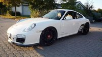
El preparador aworkx vuelve a poner su experiencia en competición (Carrera Cup, Adac GT Masters…) a disposición de sus clientes en forma de un nuevo proyecto. Si hace una semana nos mostraban su BMW M3 460cs capaz de sacar los colores a todo un GTS, esta vez nos enseñan su aworkx Porsche Carrera 435s. Si no me fallan las cuentas la preparación completa ronda los 25.500 euros.
La preparación está basada en el seis cilindros bóxer de 3.8 litros que montan las versiones Carrera S y GTS del Porsche 911. Básicamente, la fórmula mágica es añadir potencia y poner el coche a dieta para que pierda peso, algo que lo convierte en una máquina todavía más poderosa.
Si empezamos por la reprogramación electrónica ya podemos ir anotanto en la factura 2.500 euros iniciales. Si queremos también un filtro de aire deportivo y el sistema de escape de titanio Akrapovic Race que reduce el peso en 10 kilogramos y aumenta la potencia hasta los 435 CV, habrá que sumar otros 5.938 euros.
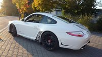
En lo referente a la suspensión podemos empezar por un kit KW Clubsport que cuesta 2.668 euros y ahorra 15 kilogramos de peso con respecto a la suspensión de serie. El sistema de frenos MOV’IT ahorra 12 kilogramos, tiene un precio de 5.895 euros e incorpora discos de 370 milímetros y pinzas de seis pistones en el eje delantero.
Las llantas ATS Superlight de 19 pulgadas con gomas Michelin Pilot Sport Cups en medidas 245/35Z y 325/30Z ahorran otros 15 kilogramos de peso y cuestan 5.280 euros. Para ir terminando, el kit aerodinámico de fibra de carbono incluye el labio frontal (800 euros), las entradas de aire delanteras (450 euros) y la parte baja del paragolpes trasero que incorpora el difusor (1.900 euros).
Galería de fotos
(Haz click en una imagen para ampliarla)
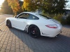
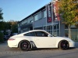
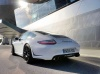
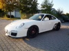
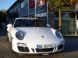
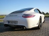
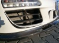
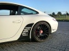
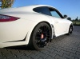
Vía | German Car Scene
En Motorpasión | a-workx BMW M3 460cs, desluciendo al GTS
Especial mantenimiento: Suspensión (parte 1)
Thu, 24 Nov 2011 06:00:50 GMT
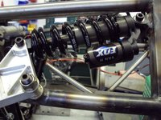
Llegamos a una nueva entrega de este especial con otro de los componentes de nuestro coche que normalmente tenemos olvidada, la suspensión. Mirar el nivel de aceite o el desgaste de nuestros neumáticos son operaciones relativamente fáciles, pero comprobar el estado de nuestra suspensión puede ser una tarea difícil.
El mantenimiento de una suspensión principalmente afecta a un componente del coche, a los amortiguadores, y adicionalmente también a la modificación de ángulos de la suspensión. Desgraciadamente la corrección de los problemas que nos surjan en estos elementos no están al alcance de cualquiera, por lo que os detallaremos como detectar los indicios de una suspensión en mal estado.
La suspensión es otra gran olvidada de la que una falta de mantenimiento puede llevarnos en el peor de los casos a un accidente grave derivado de la falta de estabilidad del vehículo. No os vamos a hacer mancharos las manos en este especial sobre suspensiones, pero si os vamos a intentar orientar para poner vuestros sentidos en alerta a las indicaciones que nos da el coche y que nos dicen que en nuestro coche ciertos elementos de la suspensión requieren de una revisión.
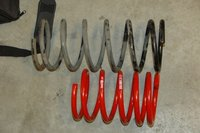
Componentes de la suspensión de un coche
La suspensión de un coche consiste de varios elementos destinados a absorber las irregularidades del firme para que no pasen al habitáculo. Una de las principales piezas de una suspensión es el elemento elástico, que puede ser un muelle, una ballesta o una barra de torsión (entre otras variantes), que es el encargado de permitir que la rueda pueda moverse arriba y abajo adaptándose a la forma del firme.
Los elementos elásticos de un coche no suelen requerir sustitución ni mantenimiento en toda la vida del vehículo a no ser que un impacto haya podido deformarlo o afectar a su integridad o que nuestras ambiciones dinámicas pasen por un elemento elástico más duro o más blando. En cualquier caso puede pasar que un muelle se rompa, aunque es muy raro, en ese caso habría que llevar el coche al taller, más que seguro en grúa, a sustituir el muelle afectado y hacer una revisión la geometría de la suspensión.
Otra de las partes de la suspensión es el amortiguador, que en algunos casos (como en las ballestas) se pueden omitir en el sistema de suspensión. Pueden ser de varios tipos, pero el más común es el telescópico hidráulico, que se basa en el rozamiento producido por el aceite al pasar de una cámara a otra a través de orificios calibrados para frenar el movimiento de rebote del elemento elástico. A medida que rodamos con nuestro coche, el aceite del interior del amortiguador se va degradando, así como los elementos que regulan el flujo de aceite en su interior.
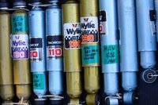
Esta degradación se acelera con la proliferación en nuestras carreteras de badenes, guardias tumbados y demás atentados contra nuestra integridad física y económica, puesto que “gracias” a ellos los amortiguadores trabajan a destajo. No existen cantidades determinadas de duración en kilómetros, tampoco en años, porque depende de cuanto uso demos al sistema de suspensión, no durarán los amortiguadores lo mismo en un coche que siempre va por autopista, que uno que va por firmes en mal estado o por zonas llenas de badenes.
Otra de las partes de la suspensión son las uniones de las ruedas con el coche. Puentes, tirantes, ejes tirados son varias de las piezas que unen la rueda al chasis o subchasis del coche, son una importante parte de la suspensión, ya que sobre ellos se montan parte del resto de piezas que conforman la suspensión. Adicionalmente, y sobre todo en el eje delantero, esos elementos llevan los sistemas de regulación necesarios para variar ciertos ángulos de la suspensión de nuestro vehículo.
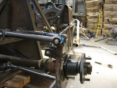
Comprobando el estado de la suspensión
Como ya os hemos comentado, el estado de nuestra suspensión no es una cosa que se pueda ver a simple vista. Por ello para determinar que nuestra suspensión necesita mantenimiento, debemos estar atentos a las indicaciones que nos da el coche y que pueden ser causadas por algún componente de la suspensión que debería ser sustituido.
Amortiguadores
Existen máquinas que miden las oscilaciones de la suspensión y pueden determinar cuando un amortiguador está en mal estado. Sin embargo, sin máquinas a mano, para saber si los amortiguadores están en mal estado existe una comprobación de las que llamamos “de ojímetro”, que consiste en apretar con nuestro peso (los delgaditos lo tenéis complicado), el muelle en compresión apoyándonos en la carrocería, con cuidado de no hundir las aletas, y soltar de golpe.
Si el coche solo sube, el amortiguador está muy probablemente en buen estado, si sube y rebota hacia abajo malo… seguramente nuestro amortiguador esté acabando su vida útil. Si el coche oscila arriba y abajo en marcha, en cualquiera de los ejes o en los dos, en exceso cada vez que cogemos un bache, o hace extraños cuando cogemos baches en curva, más de lo mismo, lo suyo es llevar el coche al taller a que eche un ojo un profesional, porque probablemente nuestros amortiguadores están dando sus últimos estertores.
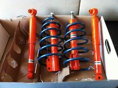
¿Y cuánto dura un amortiguador?... Pues depende, como hemos dicho, si lo hacemos trabajar mucho, durará poco, si nos movemos por carreteras con firmes tan planos como la curva de par de un motor turbo moderno, durarán mucho. Los amortiguadores no tienen una vida en kilómetros o años como otros elementos sujetos a mantenimiento de nuestro coche, pero como orientación, se suelen revisar en las revisiones gordas (30.000/50.000/60.000 km), y suelen requerir el cambio con un uso normal tras unos 50.000-60.000 km.
Los amortiguadores en mal estado además de poder causar accidentes al causar inestabilidad en el coche (sobre todo en frenada y cuando apoyamos en curva), pueden provocar desgastes irregulares en los neumáticos, por lo que si apreciamos desgastes irregulares en ellos, puede ser el anuncio de unos amortiguadores en mal estado.
Continuará...
Fotografías | Flickr (I, II, III, IV, V)
En Motorpasión | Mantenimiento del coche
1.088 CV croatas en marcha. Regreso a Motorpasión Futuro
Sun, 27 Nov 2011 17:38:25 GMT
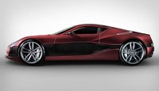
Hace unos meses ya os hablamos en Motorpasión Futuro del selecto superdeportivo eléctrico croata Rimac Concept One, de nada más y nada menos que 1.088 CV de potencia en total, gracias a sus cuatro motores. Ahora podéis ver en movimiento una de las primeras unidades de preproducción que han salido de su pequeña fábrica.
También os hemos hablado de una ingeniosa solución para moverse por la ciudad sin contaminar, que además cabe en un armario o en una taquilla, el monociclo eléctrico Solowheel, que ya se vende en España. Se parece mucho a patinar, pero sobre una sola rueda y casi sin hacer esfuerzo.
Hablando de moverse por la ciudad, esta semana os hemos informado del cada vez mayor interés por los vehículos eléctricos que tienen en China, donde por ejemplo, en la ciudad de Shenzhen van a renovar toda la flota de autobuses y taxis por unos nuevos eléctricos (son más de 23.000 vehículos en total).
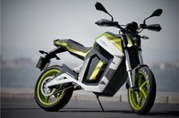
Esta semana ha habido bastantes novedades interesantes relativas al mundo de las motos eléctricas: Volta, fabricante español, ha desvelado sus tres modelos en Barcelona, se ha presentado oficialmente la moto de trial Gas Gas eléctrica en Milán, de manos de Adam Raga, y en Australia se ha presentado un prototipo de moto con motor de aire comprimido, la O₂ Pursuit Concept.
Para terminar el repaso de esta semana, un par de cosas curiosas: por una parte un estudio revela que los jóvenes entre 18 y 24 años prefieren su smartphone antes que su propio coche. Parece ser que el Tuenti, el Facebook (y otras redes sociales) enganchan más que las máquinas de cinco ruedas y dos volantes. Por otro lado, en Espacio Renault Z.E., os hemos mostrado como utilizar el Renault Twizy como lienzo en el centro de arte Matadero Madrid.
En Motorpasión | De 0 a 100 km/h en 3,5 segundos. Regreso a Motorpasión Futuro
Toyota GT 86
Sun, 27 Nov 2011 12:00:01 GMT
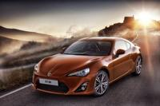
Finalmente, se ha desvelado la esperada sorpresa. Y es que Toyota ha elegido hoy domingo para dar a conocer todos los detalles de su nuevo coche deportivo. Hablamos del Toyota GT 86, este será el nombre comercial que recibe el coche de calle derivado del prototipo Toyota FT-86 del que tanto habíamos hablado en los últimos meses.
El coche que se podrá ver por primera vez de forma oficial en el Salón del Automóvil de Tokio durante esta semana, está concebido por Toyota (en colaboración con Subaru) para proporcionar placer de conducción a un precio contenido. El motor es un bóxer diseñado conjuntamente con Subaru, que lanzará el BRZ como un modelo casi gemelo del GT 86.
El Toyota GT 86 desarrollará 200 caballos gracias al motor boxer de inyección directa situado en posición delantera y longitudinal. Se trata de un cuatro cilindros de 1.998 c.c y un ratio de compresión de 12,5:1. La potencia irá a las ruedas traseras a través de un diferencial de deslizamiento limitado, algo que se agradece para tener diversión asegurada. Y entrega los 200 caballos a 7.000 RPM...
El par máximo es de 205 Nm at 6.600 RPM. Según Toyota, el ABS y el control de estabilidad desconectable están configurados para que su intrusismo sea el mínimo, y permitan así disfrutar de la conducción deportiva con seguridad. El volante es el más pequeño que ha tenido un Toyota en toda su historia, solo tiene 365 milímetros de diámetro, casi como el de un videojuego. Tiene su propio logotipo, un detalle de los Toyota JDM, no las dos elipses.
El peso es muy contenido, 1.180 kilos en vacío. Así pues, la relación peso potencia hará que el Toyota GT 86 acelere de 0 a 100 km/h en solo 7 segundos, alcanzando una velocidad punta de 225 km/h. Pero Toyota no quería olvidarse de ese toque eficiente y medioambientalmente correcto que caraceteriza últimamente a sus coches. El pequeño deportivo consumirá solo 7 l/100 km de media.
La caja de cambios será una automática con accionamiento secuencial de seis velocidades. Tendrá levas de cambio en el volante, para hacer la experiencia si cabe más divertida.
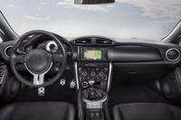
La estética del Toyota GT 86
Estéticamente ha habido pocos cambios respecto al Toyota FT-86 que ya hemos visto durante los últimos meses. La carrocería está muy musculada, con formas muy marcadas en la parte de las aletas delanteras y traseras. El largo capó delantero tiene una forma muy característica por su curvatura, y acaba en un frontal muy puntiagudo.
El faldón delantero es de grandes dimensiones, y todo parece indicar que habrá varios tipos de acabados para adaptarse al gusto de los futuros compradores del Toyota GT 86. En la trasera, dos salidas de escape de gran diámetro situadas una a cada lado del coche le dan, junto con el difusor de aire, un aspecto realmente espectacular.
En el difusor de aire se alojan las luces de marcha atrás y la luz antiniebla trasera, inspiración llegada directamente de la Fórmula 1. Para mi el mayor error de diseño está en las llantas, que son de solo 17 pulgadas de diámetro. Se ven pequeñas respecto al resto del conjunto, pero seguro que en opción habrá otras más grandes.
El precio del Toyota GT 86
Después de conocer los primeros detalles del Toyota GT 86 que llegará al mercado europeo a mediados del próximo año, muchos nos estamos preguntando que precio tendrá este modelo. Teóricamente no debería ser demasiado caro, ya que Toyota quiere conseguir con él atraer a los apasionados de la conducción con un precio contenido.
Por el momento no tenemos datos oficiales de Toyota España, no datos exactos de cuando se pondrá a la venta. Esperemos que la versión de acceso, si la hay, no supere por demasiado los 30.000 euros para poder posicionarse en un precio competitivo hoy en día.
Esperamos que no tarde en llegar la información oficial, y tened por seguro que en cuanto la tengamos os trasladaremos todos los detalles. Mientras tanto, estoy seguro que más de uno ya está comenzando a ahorrar para poder hacerse con uno. Solo queda esperar.
Y para terminar, un par de vídeos
Puede que algunos reconozcan los exteriores de los vídeos, están rodados en la provincia de Lérida, sí, en España. Qué calladito se lo tenían.
Toyota GT 86
(Haz click en una imagen para ampliarla)
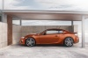
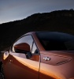
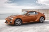
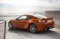
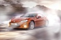
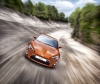
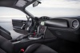
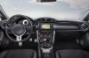
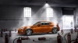
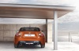
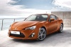
En Motorpasión | El Toyota FT-86 enseña la patita en Internet, Nuevas filtraciones sobre el Toyota FT-86 y primeras pruebas de la prensa especializada
(Ferrari) Dino 206 y 246 GT/S, en busca de la modernidad
Sun, 27 Nov 2011 10:00:38 GMT
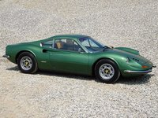
Hoy traigo a Motorpasion uno de mis Ferraris preferidos. Bueno en realidad no es un Ferrari, es un Dino. Es difícil de explicar pero antes Il Drake solo tenía una línea de automóviles de calle, aquellos con V12. El problema es que llegó un momento en que no se vendían las suficientes de estas obras de arte para seguir adelante.
Entonces empezaron a pensar en lanzar un Ferrari más barato y con un motor de menor categoría, pero a Enzo no le terminaba de encajar en su marca. Por ello, siendo un coche sobresaliente, le puso el apodo de su difunto hijo y creó una nueva. Así nacieron los Ferrari Dino 206 GT y 246 GT/S, que además fueron los primeros de Maranello en montar propulsor central.
Qué os parece, ¿Le echamos un vistazo al tatarabuelo del 458 Italia?
Nuevos competidores
En los años sesenta las cosas ya no iban tan bien para la casa del cavallino rampante. Sí, es cierto, Ferrari seguía cosechando gloriosos éxitos tanto en fórmula como en turismo, pero no era más como en la década anterior cuando su dominio fuera practicamente incontestable.
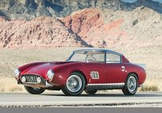410 Superamérica de 1957, en los cincuenta Ferrari no tenía rival
Poco a poco habían brotado como setas otoñales nuevos fabricantes que sucedieron a las tradicionales reinas del automovilismo Bugatti, Alfa-Romeo, Maserati y Mercedes. Enzo estuvo al mando del equipo deportivo de la segunda desde aproximadamente 1925 y después fundó su marca durante 1947. Es decir, estaba acostumbrado desde hacía treinta años a saber contra quién competía.
Pero entonces llegaron aquellos desconocidos. ¿Qué eran esos Cooper, Lotus, BRM, Brabham, Honda… Constructores ingleses y incluso japoneses que ahora irrumpían con éxito en las viejas carreras de Formula 1? Los tiempos estaban cambiando…
También en el mundo de los turismos, es decir en el de los coches sport que constituían el otro campeonato mundial. Marcas como Jaguar, Aston-Martin y sobre todo Porsche hacían levantar las cejas a Il Commendatore. No, definitivamente ya no era tan fácil como cuando en 1951 destronó a Alfa ni cuando a lo largo de los diez años siguientes batió a Maserati.
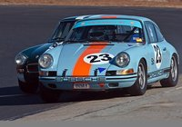Al rico 911
Todos aquellos novatos, junto con Lamborghini y BMW, habían saltado a las calles con coupés y deportivos capaces de plantar cara a las sagradas máquinas de Ferrari. No todos en imagen o prestaciones, pero sí en comportamiento y posibilidades.
Y no solo se trataba de eso, sino que además por su precio y posicionamiento más bajo en el mercado bastantes eran mucho más rentables. Ello les daba el dinero para lanzarse a una carrera tecnológica que Ferrari no podría soportar a largo plazo sin aumentar su producción o conseguir ayuda externa.
Por suerte Il Commendatore se adaptó a los nuevos tiempos e hizo las dos cosas de manera particularmente inteligente. En primer lugar buscó la participación de FIAT sin que implicase perder demasiada autoridad. En segundo creó un precioso deportivo abaratado, el primero de Maranello con motor central, destinado a conquistar nuevos clientes por abajo.
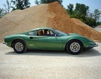
Alfredo “Dino” Ferrari, Jano y su V6
Por tanto, el pequeñín que traemos a estas páginas virtuales es el fundador de la segunda línea de automóviles del cavallino, la cual llega hasta nuestros días. El Dino es el tatarabuelo del 458 Italia y del California, el uno por su concepción y el otro por su concepto.
En un principio fue incluso más que eso, una marca propia. Enzo consideraba que aunque el coche fuera excelente no se correspondía con la tradición de road cars Ferrari, animados siempre por V12s.
Pero aun así debía de ser un deportivo fantástico, ya que iba a llevar el apodo de su difunto hijo Alfredo. También el último motor imaginado por éste junto a Vittorio Jano, el Dino V6 de 1956, nada más y nada menos que el padre de los V8 posteriores.
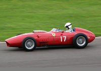Mike Hawthorne ganó el mundial de F1 de 1960 en un monoplaza similar a éste
No sé si conoceis a Jano. No quiero sermonearos pero deberíais: Es a Italia lo que Ferdinand Porsche es a Alemania. Un verdadero monstruo de la ingeniería que llevó a Alfa a la cumbre durante los años veinte y treinta y puso con ello las bases del automovilismo deportivo italiano.
Este magnífico técnico llegó a Ferrari cuando Lancia cedió a ésta todo su equipo de competición en el 55. Allí, con más de sesenta años, había diseñado un F1 y un turismo ganadores, los D y S 50. Claramente aun estaba en la brecha y en condiciones de plantar cara a nuevas glorias como Colombo, Lampredi o Chiti.
Pero volvamos a Maranello: Dino Ferrari y Vittorio Jano esbozaron y decidieron poner a punto un V6. El primero murió de distrofia muscular y el veterano técnico tuvo que diseñar sólo el propulsor. Como siempre acertó y en 1960 Mike Hawthorn demostraba su eficacia ganando el campeonato del mundo de Fórmula 1 a los mandos del monoplaza 256.
Al Dino V6 pronto le acompañaría un hermano de ocho pistones y ambos evolucionarían durante décadas protagonizando gestas tanto en la categoría reina como en la sport. También en las carreteras a partir del Dino 206 GT.
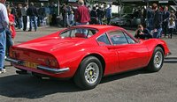
Dino 206 y 246 GT/S
En realidad a Enzo no le hacía mucha gracia producir un vehículo de propulsor central. Pensaba que sería inseguro para todo aquel que no fuese piloto. Sin embargo, a la vista del cariz que estaban tomando las cosas en competición en cuanto a ubicación de motores y de la presentación del Lamborghini Miura, sus ingenieros lograron convencerle de que era el futuro.
Pero como no estaba muy seguro primero probó con el Dino. Así mataba dos pajaros de un tiro. Una vez se le quitaron los miedos no tuvo ya reparos en producir a su nombre los 365 y 512 BB o el Testarossa, entre otros muchos más actuales que sin duda conoceis.
Pero centrémonos: Encargaron el diseño a Pininfarina y se presentaron en el Salón del Automóvil de París de 1965 con un prototipo. Después repitieron en el de Turin al año siguiente. La acogida por parte del público fue tan calurosa que desaparecieron todas las dudas acerca de lo acertado de producir el modelo.
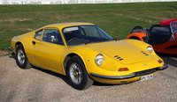
Precisamente aquí es donde entraba en juego la participación de FIAT que mencionábamos al principio. Por un lado Ferrari necesitaba construir 500 ejemplares del motor para homologarlo según las nuevas normas de F2.
Pero es que además era imprescindible si se quería abaratar la producción y ponerlo al alcance de los compradores del Porsche 911. Así pues en Mirafiori se construrían los V6, mientras que en Maranello se encargarían de los chasis. Respecto a las carrocerías, correrían a cargo de Scaglietti, también Modena.
El precio a pagar por Ferrari era que Fiat pudiese montar los propulsores en su nuevo coupé y spider. Además, durante este periodo FIAT fue poco a poco tomando el control financiero de Ferrari hasta que en 1969 compró el 50 % de las acciones. La muerte de Il Commendatore durante 1988 le daría otro 40.
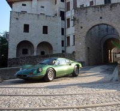
En realidad a Enzo esto le venía muy bien ya que su amor eran las carreras. Los modelos de calle quedaban en un segundo plano dentro de su escala de prioridades, siendo un pretexto con el que conseguir pasta para competir.
Ferrari seguiría siendo la misma de siempre, solo que con más dinero para investigar y mejores gestores comerciales. La pérdida de indepencia fue tenue, ¡Cuálquiera le decía algo al Drake!
Así pues el Dino fue lanzado en 1969 como modelo 206 GT, con un dos litros de aluminio, 160 CV a 8000 rpm y 187 Nm de par a 6500. Mala idea porque la clientela esperaba más. Por eso a las 157 unidades acordaron incrementar el cubicaje del motor en 400 cc para llegar a 190 equinos a 7600 vueltas y un nuevo par de 225 a 5500.

Ahora bien, la mejora implicó prescindir de la aleación anterior para utilizar acero, lo cual embruteció la berlineta hasta los 1077 kilos, un pellizco más que los 1020 del 911 al que pretendía hacer frente. Tuvieron suerte de que no fuera un factor clave en la decisión de compra.
Sea como fuere, el 206 GT se convirtió en 246 GT. Después, en el 72, llegó la versión descapotable, conocida como GTS. Y hasta el 74 triunfaron. Se vendieron aproximadamente 2200 coches cerrados y 1300 abiertos. Es decir unos 3500 en total, todo un éxito comercial.
Y también la cara más amable de Il Commendatore, quizá uno de sus pocos deportivos que no es un depredador. Tiene garra sí, pero no te va a comer. Casi que lo prefiero a unos cuantos Ferraris de los gordos, aunque por supuesto ésta es una opción bastante personal.
En fin, en cualquier caso gracias a este Dino Ferrari se subió al tren de la modernidad. Pasó de ser un pequeño constructor a uno de talla y así pudo preservar su modo de vida hasta que murió en 1988. Buen movimiento y precioso coche, Drake.
Fotografía | Stefano Mecchia,dicktay2000,skagman,Stefano Mecchia,exfordy,exfordy,Stefano Mecchia,Rex Gray,pyntofmyld
*El Ferrari 410 Superamérica de la segunda fotografía será subastado por RM Auctions en enero.
Sebastian Vettel logra la pole en Brasil y establece un nuevo récord
Sat, 26 Nov 2011 18:22:55 GMT
Gran Premio de Brasil, una nueva pole para Sebastian Vettel en la temporada 2011, una nueva muesca en la culata de su Red Bull RB7. El piloto alemán ha logrado su decimoquinta pole-position del año, lo que le permite superar el récord de 14 poles que hasta hoy estaba en manos de Nigel Mansell.
Vettel ha sido el único piloto de la parrilla en bajar de 1:12, mejorando en poco más de una décima el tiempo de su compañero Mark Webber. Los dos Red Bull coparán la parrilla de salida teniendo justo detrás a los pilotos de McLaren. Esperábamos más guerra de Hamilton y Button pero finalmente no ha podido ser.
Fernando Alonso, abonado a la quinta posición a lo largo de la temporada, tampoco ha podido plantar cara a sus rivales. Mañana en carrera, y con la esperada lluvia, las cosas podrían mejorar para el asturiano. Junto a el en tercera línea de parrilla estará Nico Rosberg.
Jaime Alguersuari ha sido decimotercero, superando a su compañero Buemi en la última clasificación del año. Español y suizo deberían conocer que les depara el futuro en los próximos días. Por su parte, los pilotos de HRT han superado, y bien superado, a sus rivales de Marussia Virgin Racing, aunque siguen lejos de los Team Lotus.
Recordad que mañana, podréis seguir la carrera en directo gracias a la retransmisión de Motorpasión F1.
Clasificación Gran Premio de Brasil Formula 1 2011
| Pos | Piloto | Equipo | Q1 | Q2 | Q3 | Vueltas |
| 1 | Sebastian Vettel | RBR-Renault | 1:13.664 | 1:12.446 | 1:11.918 | 17 |
| 2 | Mark Webber | RBR-Renault | 1:13.467 | 1:12.658 | 1:12.099 | 16 |
| 3 | Jenson Button | McLaren-Mercedes | 1:13.281 | 1:12.820 | 1:12.283 | 18 |
| 4 | Lewis Hamilton | McLaren-Mercedes | 1:13.361 | 1:12.811 | 1:12.480 | 22 |
| 5 | Fernando Alonso | Ferrari | 1:13.969 | 1:12.870 | 1:12.591 | 22 |
| 6 | Nico Rosberg | Mercedes | 1:14.083 | 1:12.569 | 1:13.050 | 21 |
| 7 | Felipe Massa | Ferrari | 1:14.269 | 1:13.291 | 1:13.068 | 18 |
| 8 | Adrian Sutil | Force India-Mercedes | 1:13.480 | 1:13.261 | 1:13.298 | 23 |
| 9 | Bruno Senna | Renault | 1:14.453 | 1:13.300 | 1:13.761 | 20 |
| 10 | Michael Schumacher | Mercedes | 1:13.694 | 1:13.571 | No time | 18 |
| 11 | Paul di Resta | Force India-Mercedes | 1:13.733 | 1:13.584 | / | 17 |
| 12 | Rubens Barrichello | Williams-Cosworth | 1:14.117 | 1:13.801 | / | 17 |
| 13 | Jaime Alguersuari | STR-Ferrari | 1:14.225 | 1:13.804 | / | 18 |
| 14 | Sebastien Buemi | STR-Ferrari | 1:14.500 | 1:13.919 | / | 22 |
| 15 | Vitaly Petrov | Renault | 1:13.859 | 1:14.053 | / | 16 |
| 16 | Kamui Kobayashi | Sauber-Ferrari | 1:14.571 | 1:14.129 | / | 18 |
| 17 | Sergio Perez | Sauber-Ferrari | 1:14.430 | 1:14.182 | / | 21 |
| 18 | Pastor Maldonado | Williams-Cosworth | 1:14.625 | / | / | 11 |
| 19 | Heikki Kovalainen | Lotus-Renault | 1:15.068 | / | / | 11 |
| 20 | Jarno Trulli | Lotus-Renault | 1:15.358 | / | / | 14 |
| 21 | Vitantonio Liuzzi | HRT-Cosworth | 1:16.631 | / | / | 8 |
| 22 | Daniel Ricciardo | HRT-Cosworth | 1:16.890 | / | / | 9 |
| 23 | Jerome d’Ambrosio | Virgin-Cosworth | 1:17.019 | / | / | 10 |
| 24 | Timo Glock | Virgin-Cosworth | 1:17.060 | / | / | 10 |
| / | / | 107% | 1:18.410 | / | / | / |
Más información en Motorpasión F1
Dunlop SP Sport Maxx GT, prueba en el Circuito de Monteblanco
Sat, 26 Nov 2011 11:30:59 GMT
Para empezar el día con energía, hace falta un buen desayuno, bien cargado. Por eso, os propongo un segundo desayuno acompañado de los siguientes coches: Porsche 911 Turbo S, Ferrari F430 Spider, Lamborghini Gallardo LP560-4, Audi R8 Spyder V8 y Mercedes-Benz SLS AMG. ¿Pero a qué viene todo esto?
Pues que me gusta conducir. La excusa es una presentación dinámica de neumáticos Dunlop en el Circuito de Monteblanco (Huelva), de la misma forma que hicimos con Michelin en el Circuito de Estoril anteriormente. El aroma de gasolina recién quemada por la mañana huele a… victoria.
Aunque no fue posible comparar el neumático en cuestión con ningún otro, ya sea de la propia marca o de la competencia, sí pudimos apreciar con todo lujo de detalles el por qué un neumático para coches tan especiales debe ser también especial, así como de lo que son capaces los SP Sport Maxx GT. No os perdais el vídeo porno que os hemos preparado más adelante.
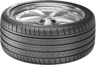
El neumático
Los requisitos para un neumático de orientación deportiva UHP (ultra-altas prestaciones) son diferentes a un neumático de alta duración kilómétrica o de precio competitivo. Aquí se trata de mejorar la adherencia y poder controlar las intensas embestidas que va a recibir por las llantas y por el propio asfalto.
Dunlop nos cuenta que el neumático tiene una banda de rodadura que tiende a agarrar más carretera al homogeneizar la presión, que tiene unos hombros diseñados para adaptarse de curva a recta y viceversa, que limita la deformación, que tiene una estructura hecha con material muy resistente, etc.
Previa a la conducción en circuito, hubo dos breves pruebas en paddock con un Volkswagen Golf GTI y un Porsche Cayman R, en seco y mojado. Tal vez fue por deformación profesional, pero la sensación de control que tuve fue muy alta, incluso cuando pisé fuerte en segunda al Cayman sin control de estabilidad con la pista empapada por aspersores.
Porsche Cayman R
El previsible sobreviraje pude controlarlo con relativa facilidad, pero creo que es por tener las manos ya acostumbradas a un propulsión trasera que no tiene ayudas. Sobre seco esos coches iban sobre raíles y traccionaban de forma óptima. A fin de cuentas, el Golf GTI es un coche para ir a la compra comparado con los que venían después.
No hubo momento alguno en el que sintiese que la situación se me iba de las manos. Mi percepción coincide con lo que promete el fabricante, sensación de control, pudiendo anticipar lo que se venía encima para actuar de forma preventiva y así tener el coche en todo momento obediente a mis designios.
Estas ruedas son para coches deportivos, las referencias van de 18 a 22 pulgadas, y las más baratas cuestan 200 euros, las más caras 683 euros. Pueden durar más de 50.000 kilómetros, pero si se utilizan de forma exigente duran menos, aunque mucho más que unas Toyo o unos neumáticos muy blandos.
Porsche 911 Turbo S
La prueba en circuito
Cuando uno juega al Need For Speed o a cualquier otro, le gusta ver las diferencias entre los distintos cochazos que jamás se va a poder permitir. En este caso hice lo mismo, pero con más realismo. Igual un día me golpe la fortuna y me puedo comprar uno, pero todos a la vez lo dudo, salvo que aparezca petróleo bajo mi casa.
Yo suelo decir que hay dos tipos de coches, los normales, y los que son como estos. Están fabricados por gente que le mueve la pasión y se han elaborado con el mismo material intangible del que están hechos los sueños. Por mucho que busquemos, no tienen una justificación lógica, representan una necesidad del alma.
He conducido unos 300 coches distintos, pero creo que esta vez ha sido la que más caballos mecánicos he catado de una tacada. Volví a sentir los nervios, el cosquilleo en el estómago, la emoción de probar un coche que me sorprenda como hicieron los primeros, sentir otra vez los síntomas del primer amor.
Mercedes SLS AMG, Ferrari F430 Spider y Porsche 911 Turbo S
Por cada coche, dos vueltas, una desde boxes, y otra lanzada. Empecé con el Porsche 911 Turbo S, y sin conocerme el circuito para nada. Estaba equipado con el cambio PDK de doble embrague (no lo hay manual), y al igual que todos los coches probados, era automático. No sabría decir si lo llevé en automático o semiautomático, aún me tiemblan las manos escribiendo esto.
Este bicho tiene 530 CV y un brutal par máximo: 700 Nm. Aunque es un poco pesado, se planta en 100 km/h en solo 3,3 segundos. La sensación de aceleración es probablemente la más intensa que he sentido en mi vida en un coche de calle. Por hacer un símil, es como tener un cohete en el culo.
A pesar de ser un coche con el motor “mal colocado”, con la tracción total y la búsqueda de la perfección de Porsche, es un coche relativamente fácil de llevar incluso a fuego. Es más explosivo que el GT3 RS (atmosférico), parece que el recorrido del acelerador descendía hasta el infierno, que siempre había más.
Lamborghini Gallardo LP560-4
Si no fuera por la resistencia aerodinámica, en séptima debería llegar a 385 km/h teóricos, aunque “solo” llega a 315. En la recta de Monteblanco llegué a verlo por un instante a más de 260 km/h, y juraría que es el coche con el que más rápido fui de todos, y sin conocerme la pista todavía.
A continuación, el Ferrari F430, que me debía una satisfacción desde 2007, nunca pude pasarlo de 4.000 RPM antes. Esta vez vino el desquite, y le pisé hasta que me pidió la siguiente marcha pasadas las 8.000. La unidad estaba modificada, daba 510 CV (como el Scuderia), el escape era diferente y no recuerdo qué era lo tercero. De serie tiene 490 CV.
El 4.3 V8 italiano tiene un sonido fuerte e imponente, esperaba algo más refinado, pero claro, no está de serie. Cambiando a muy altas revoluciones el cambio daba tirones, y eso que es de los cambios más sofisticados de su época. En los primeros giros me pareció muy subvirador para mi gusto, y en parte me decepcionó un poco.
Ferrari F430 Spider
No sé cuánto “tute” tenía esta unidad, pero en el interior sonaba algún grillito que otro. Pero eso nos da igual, ¿verdad? Conducir un Ferrari es algo que todo el mundo debería hacer antes de morir, aunque luego la experiencia no termine de gustarnos. Después de dar dos vueltas con él, qué queréis que os diga, pero me quedo con el 911 Turbo.
Después me tocó el Lamborghini Gallardo LP560-4, que solo había conducido en videojuegos. Una vez más, tracción total, pero el motor ahora es un V10 de 560 CV, lo más potente que he conducido en mi vida tras este otro. Su motor de giro rápido tiene un sonido embriagador, que querríamos que sonase hasta el límite de frecuencia del oído.
El Gallardo tiene una orquesta sinfónica de 10 cilindros, y no suena, canta. Si Pavarotti hubiese sido un coche, sería este. Lástima que era el único coche con el control de estabilidad para carretera (Stradale), que eso limitaba un poco el dinamismo y me capaba en algunas curvas. No pasa nada, se lo perdonamos. Yo lo hice.
Audi R8 Spyder
Voy recordando el trazado de cada curva mentalmente, y aunque otros oirían ruido, yo insisto en que oía música. Estaba tan sumergido en el disfrute de la conducción que en mi memoria hay lagunas. No me preguntéis cómo era el tarado de la suspensión, ni si había mucho ruido de rodadura, que no me acuerdo. Fue una catarsis.
Disculpadme si no fui muy profesional, pero también soy humano. Después del toro, anillos, Audi R8 Spyder V8. Al ser el menos potente de la cuadra (430 CV) y con tracción total, era el coche más fácil de conducir de todos. Ya había conducido antes otros R8, y tanta sensación de control no termina de convencerme.
Su motor de baja cilindrada, un 4.2, suena a gordo, y tiene un tono muy agradable, pero más germánico, prefiero el estilo italiano. Las mejores óperas no se han escrito en alemán, sino en italiano. El R8 es alemán de pies a cabeza, más cuadriculado, puede que fuese el menos emocionante de todos, puestos a comparar.
Ferrari F430 Spider, Audi R8 Spyder, Mercedes-Benz SLS AMG
El cambio automático del R8 no es de doble embrague, es un R tronic, una caja manual robotizada de un solo embrague, por lo cual se notan tirones cuando se rueda muy fuerte. A ver cuándo recibe el S tronic (DSG), que eso será otro cantar. Pero bueno, hay a quien le gustan los tirones, sobre todo si le acaba de dar a la leva para cambiar.
Esa es otra, cada coche tenía las levas de un tamaño diferente y podía ser desconcertante. Estos coches en modo automático se llevan muy bien, un conductor normal y acostumbrado a coches normales (de menos de 200 CV) no sería capaz de sacar el máximo partido en modo semiautomático a estos aparatos.
El ser descapotable de lona no le hace más torpe, aunque no lo he comparado directamente con la versión de techo duro. Tampoco el ruido se convierte en insoportable ni nada por el estilo. Cuando un cabrio se hace con capota flexible, pero se hace bien, no echaremos de menos el techo duro.
Mercedes-Benz SLS AMG
Por último, el Mercedes-Benz SLS AMG, que ya se me había escapado en la presentación de Michelin. La marca de la estrella aún hace motores grandes, y el 6.3 V8 tiene un sonido más imponente, más profundo, aunque subjetivamente puede parecer un coche más lento porque no sube tanto de vueltas.
El cambio AMG SPEEDSHIFT DCT 7, de doble embrague, no me ha convencido. Es como si no aprovechase bien el motor y le hace ir a menos vueltas de las que me gustarían, así que pasé a semiautomático tan pronto como pude. Quise estirar las marchas, la película cambió, ya me gustó un poco más. No sabría deciros en qué modo de cambio estaba.
No me pareció difícil de conducir, aunque estamos hablando de condiciones de adherencia totalmente óptimas. Al hacer todo el rato una conducción orientada al agarre y no a buscar los límites del coche, se dejaba llevar y era obediente. Solo le faltó decir de vez en cuando “Ja vohl, Mein Herr!”.
En general, con todos estos coches y los neumáticos SP Sport Maxx GT, la conducción en circuito me ha parecido asequible. No me he quejado de falta de tacto en la dirección, ni de que agarrasen poco, ni de que sean excesivamente ruidosos. Son gomas informativas, antes de que empiecen a perder agarre avisan con tiempo.
Ya estemos hablando de motricidad, agarre transversal o frenada, me han parecido óptimos, pero insisto en que no he podido compararlos con otros. Con la gama deportiva de Michelin se podían apreciar diferencias palpables entre los distintos neumáticos de gama deportiva. Estos son los topes de gama para calle de la marca.
Dado que cualquier coche, por bueno que sea, ha de ir bien calzado, es importante escoger el neumático adecuado. Ya habéis visto en los vídeos que las gomas apenas chirrían, que se deforman poquísimo y que permiten volar en circuito. A ver para cuándo podemos ver las diferencias con sus competidores, que acudiremos.
De todos los coches que conduje, me quedo con el 911 Turbo S, es el que más me gustó, seguido por el Gallardo. Volviendo al 911, es uno de los coches que más me ha impresionado por la forma en la que corre sin ser un trasto incontrolable. Habría deseado que me cerrasen una provincia entera al tráfico y recorrerla de punta a punta a toda la velocidad que pudiese.
Lamento que no salga ni una sola fotografía propia, porque estaba tan extasiado que no saqué la cámara de la bolsa, aunque sí saqué la de vídeo y pude hacer este corto, que espero sinceramente que os guste a todos. ¡Qué día, qué día! Pero había que volver a la tristísima realidad.
Cuando me subí de nuevo en mi híbrido de 136 CV, se me vino el mundo encima. Vuelta a conducir un coche normal. Me deprimí. Conduje a puntita de gas hasta Sevilla, sin pasar de 110 km/h, ya que iba en un coche que no corre, al menos, que gastase poco. Me salió una media de 4,4 l/100 km. Tenía muchas emisiones que compensar, me sentía un pecador, ¡pero cómo disfruté quemando mi parte del bosque!
Galería de fotos
(Haz click en una imagen para ampliarla)
Los gastos del viaje para esta presentación han sido asumidos por la marca. Para más información consulta nuestra guía de relaciones con empresas.
Vídeo | VideofyMe, Youtube
En Motorpasión | Dunlop SP Sport Maxx TT, prueba en el Vicente Calderón
Lewis Hamilton, el más rápido en el Gran Premio de Brasil
Fri, 25 Nov 2011 19:43:20 GMT
En 2007, Lewis Hamilton perdió en Brasil un título que casi podía tocar con los dedos. Un año después, la suerte giró 180º y un título que parecía en manos de Felipe Massa acabó decorando el palmarés del británico. Unos años después, Lewis Hamilton llega al Gran Premio de Brasil con el objetivo de ratificar las magníficas sensaciones mostradas en Abu Dhabi.
En Yas Marina, Hamilton recuperó parte del crédito perdido a lo largo de la temporada, principalmente en batallas inútiles con Felipe Massa. Hay que reconocer que su victoria tuvo en el abandono de Sebastian Vettel una ayuda sin precio. Pero esa es harina de otro costal.
Hoy en el Autódromo José Carlos Pace, Lewis Hamilton ha marcado el mejor tiempo en la segunda sesión de entrenamientos libres. Una tanda marcada por la gran igualdad en los tiempos con los ocho primeros clasificados en tan sólo medio segunda. Es incluso curioso ver como Michael Schumacher se ha colado entre los cinco mejores.
Fernando Alonso ha terminado en cuarta posición, por detrás de Hamilton y de los dos Red Bull. Todo parece indicar que mañana el duelo será entre los cinco pilotos habituales. La gran incógnita es si Sebastian Vettel logrará batir el récord de poles en una misma temporada.
Por su parte, Jaime Alguersuari ha marcado un magnífico undécimo mejor tiempo en la primera sesión, pero en la segunda las cosas no iban tan bien y descendía hasta la decimoséptima, tan sólo por delante de los Williams y de los pilotos de las tres escuderías “nuevas”.
Entre estas últimas, los HRT. La escudería española estrenaba piloto en la primera sesión, el checo Jan Charouz, mientras que en la segunda, Liuzzi volvía a su asiento. HRT y Marussia Virgin Racing han estado a más de un segundo y medio de Team Lotus. El dato lo dice casi todo.
Mañana a las dos de la tarde, tercera y última sesión de entrenamientos libres. Tres horas después, a las cinco de la tarde, la última clasificación de la temporada.
Más información en Motorpasión F1
i-ELOOP, el regenerador de energía de frenada con condensador de Mazda
Fri, 25 Nov 2011 13:00:55 GMT
En la lucha por la eficiencia, Mazda no quiere seguir por el camino establecido. Los híbridos son una solución en la que por el momento Mazda no tiene pensado apostar. Lo harán en un futuro, seguramente de la mano de Toyota, pero por el momento aseguran que los motores de combustión pueden ser mucho más eficientes.
A modo de recordatorio diremos que están a punto de presentar una nueva gama de motores, denominados SKYACTIVE, que según la marca, tendrán un consumos lo suficientemente bajos como para no pensar en vehículos híbridos (la marca señala que el hecho de tener que tener un motor eléctrico y una gran batería dedicada es un inconveniente).
Pues bien, para conseguir esos consumos, Mazda nos presenta i-ELOOP, un sistema de regeneración de energía de frenado que permitirá reducir el consumo de combustible hasta en un 10%, especialmente en ciudad, donde hay importante diferencias de velocidad durante un mismo trayecto.
i-ELOOP es un sistema de regeneración de frenada algo especial. Aunque utiliza como todos los sistemas similares un alternador para convertir la energía cinética en electricidad, emplea un condensador (fotografía inmediatamente superior), que a diferencia de las baterías, puede almacenar grandes cantidades de energía temporalmente, cargarse muy rápido y no acusa el paso del tiempo.
Para más señas, podemos decir que i-ELOOP cuenta con alternador de voltaje variable (12-25V), un condensador de doble capa de baja resistencia eléctrica y un convertidor de corriente. i-ELOOP empieza a recuperar la energía cinética en el momento que el conductor levanta el pie del acelerador y el vehículo comienza a desacelerarse. El alternador de voltaje variable genera electricidad de hasta 25V para una eficiencia máxima antes de enviarlo al condensador de doble capa eléctrica (EDLC) para su almacenamiento. Este condensador se puede cargar completamente en cuestión de segundos y además el sistema también carga la batería del vehículo cuando sea necesario.
La electricidad obtenida se usa para alimentar el sistema de climatización, el equipo de sonido, y en general cualquier necesidad eléctrica del vehículo (como la luneta térmica, que es una gran demandante de energía). Por el momento esto es todo lo que sabemos, pero en el próximo Salón de Tokio conoceremos todos los detalles del sistema, que estrenara el Mazda Takeri. Os dejo caer también, que en algunas semanas os contaremos más sobre todo esto con información de primera mano.
En Motorpasión | Mazda2 1.3 SKYACTIV-G, ¿el más ecológico de Japón?
Fiat cierra la fábrica de Termini Imerese
Fri, 25 Nov 2011 11:00:08 GMT
Ayer se cerró un capítulo en la historia industrial italiana, cuando el grupo Fiat cerró su planta de Palermo (Italia). Se fundó en 1970 y empezó fabricando el Fiat 500 clásico (en imagen). Posteriormente fabricó los 126 (1975-1979), Panda (1980-1992), Punto (1993-2004) y Lancia Ypsilon (2005-2011).
El motivo del cierre, su baja productividad. Sergio Marchione ya dejó caer el año pasado que tenía que mejorar la productividad de sus fábricas italianas, y esta ha sido la primera en caer. Junto a la planta de Amberes (General Motors/Opel) es la segunda fábrica europea que se cierra en los últimos años de crisis.
Durante sus 41 años de historia, Termini Imerese sacó adelante 4 millones de coches. Dependían de ella 1.600 empleos directos (hasta 3.200 en los 80) y 700 indirectos. El futuro de la planta está en manos de DR Motor, que ensamblará coches cuyas piezas vienen hechas de China. Crucemos los dedos.
Esta firma ofrece tres coches: dr1 (utilitario), dr2 (monovolumen pequeño) y dr5 (SUV) a unos precios demoledores, desde 7.980, 8.980 y 13.880 euros respectivamente (para Italia). Al menos, muchos trabajadores volverán a recuperar su empleo. El Ypsilon de segunda generación (2003-2010) ya no se fabrica.
En Motorpasión | Italia es territorio improductivo para Fiat
Última tanda EuroNCAP: Fiat Panda, Jeep Grand Cherokee, Jaguar XF y Renault Fluence ZE salen perdiendo con cuatro estrellas
Fri, 25 Nov 2011 08:00:56 GMT
Un total de 17 modelos componen la última tanda de resultados EuroNCAP (Chevolet Malibú, Chevrolet Volt, Fiat Panda, Geely Emgrand EC7, Jaguar XF, Jeep Grand Cherokee, Kia Rio, Mercedes-Benz Clase B, Mercedes Benz Clase C Cuope, MG6, Range Rover Evoque, Renault Fluence ZE, Subaru XV, SEAT Mii, Skoda Citigo, Volkswagen Up! y Volkswagen Beetle).
La mayoría de los modelos han obtenido cinco estrellas como calificación global, excepto el Geely Emgrand EC7, el MG6, el Fiat Panda, el Jeep Grand Cherokee, y el Renault Fluence ZE. Ahora pasaremos a examinar más detenidamente los fallos que han sido detectados por el consorcio para no dar la máxima calificación a estos modelos.
En el caso del Fiat Panda, EuroNCAP señala que la protección en caso de impacto a un ocupante adulto es mejorable. Concretamente se señala el pecho como una zona aceptablemente protegida (por encima hay dos calificaciones, correcta y buena). La misma calificación es otorgada a la protección contra el latigazo cervical. En el resto de parámetros no hay apenas pegas, aunque no suma puntos por sistemas de ayuda a la seguridad.
El Geely Emgrand EC7 por su parte obtiene tan sólo un 75% de calificación en el apartado de protección de ocupante adulto. Las zonas de los pies del conductor están deficientemente protegidas y eso le ha restado muchos puntos. En el resto de apartados sí obtiene buenos datos, pero tendrá que solucionar su el problema que acabamos de comentar. Es el único modelo que obtiene la peor valoración posible en alguna zona.
Lo cierto es que me ha costado encontrar algún modelo que tenga la peor valoración (deficiente) en algún área de protección, aunque hay un par de expeciones, como el Daewoo Lanos y el Daewoo Matiz. En ambos casos las pruebas son previas a 2009 (año en el que se endurecieron los criterios de valoración).
Por su parte, el Jaguar XF sigue sin mejorar sus datos. La protección del conductor ante un impacto frontal sigue siendo tan sólo aceptable, y el latigazo cervical sigue siendo un problema importante. Por eso obtiene una calificación de protección de ocupante adulto de 79%, mientras que para el resto de categorías tampoco obtiene datos especialmente brillantes (73% en protección de ocupante infantil, 62% en protección de peatón y 71% en sistemas de asistencia a la seguridad).
El otro coche chino de esta tanda, el MG6, tiene un calificación de 73% en el apartado de protección de ocupante adulto con varios puntos a mejorar (latigazo cervical, protección del pecho y piernas de conductor y acompañante), pero obtiene una mala calificación especialmente en la protección al peatón, donde EuroNCAP le da un 42%.
Por último, el eléctrico Renault Fluence ZE obtiene también cuatro estrellas en la calificación global. Durante las pruebas, hubo un fallo con el airbag del conductor, circunstancia que ya está siendo investigada por la marca para ser subsanada. No sabemos si una vez que se mejore este aspecto el francés obtendrá las cinco estrellas, por que en el apartado de protección al peatón tampoco obtuvo un buen dato (37%).
El resto de modelos, como ya hemos dicho obtuvieron cinco estrellas, aunque eso no significa que no tuvieran algún fallo. Si queréis consultar algún otro dato sobre cualquiera de estos modelos, podéis hacerlo en la propia página de EuroNCAP, de la que os dejo el enlace más abajo.
No obstante, y a modo de resumen, diremos los mejores de cada categoría. En protección de adultos, el mejor, con el 97% de los puntos posibles, es el Mercedes-Benz Clase B (seguido muy de cerca por el Chevolet Malibú); en protección de niños hay un doble empate (90%) entre el Subaru XV y el Volkswagen Beetle; en protección de peatones el mejor ha sido, el Subaru XV y por último, en sistemas de ayuda a la seguridad tenemos un múltiple empate con el Chevrolet Volt, el Geely Emgrand, el Kia Rio, el Mercedes Benz Clase B, el Mercedes Benz Clase C Cuope, el Range Rover Evoque, el SEAT Mii (y sus hermanos) y el Volkswagen Beetle.
Fuente | EuroNCAP
En Motorpasión | ¡OJO! Dos coches chinos ya tienen cuatro estrellas EuroNCAP
Especial mantenimiento: Suspensión (parte 2)
Fri, 25 Nov 2011 06:00:42 GMT
La geometría de la suspensión está determinada por una serie de ángulos que marcan en mayor o menor medida el comportamiento dinámico del coche. Trataremos los más comunes, por ser normalmente ajustables, que son la caída (o camber) y la convergencia (o toe). El resto de ángulos suelen venir determinado por el tipo de suspensión y por tanto no suelen ser ajustables.
Todos los coches suelen llevar una geometría predeterminada de fábrica, pero son múltiples factores los que pueden influir en estos ángulos, por lo que hay que revisar de cuando en cuando que la alineación, como normalmente se llama al conjunto de esos ángulos, está dentro de los valores predeterminados para nuestro coche.
El paso del tiempo, un uso exigente o un simple bordillazo aparcando pueden afectar a la alineación de nuestras ruedas. Una mala alineación puede producir desde desgastes irregulares en los neumáticos, normalmente las zonas interiores por un ángulo de caída negativa excesivo, o irregular en toda la banda de rodadura por una convergencia o divergencia excesiva.
Geometría de la suspensión
El ángulo de camber (o caída) es el que forma una línea imaginaria que recorre el neumático de forma longitudinal con la vertical cuando lo miramos de frente. Si este ángulo es hacia el interior del coche, se dice que la rueda tiene caída negativa, y si va hacia el exterior, se dice que tiene caída positiva. Para aclararse, mejor ver la imagen superior, que queda más claro.
La convergencia o divergencia determina el ángulo que forma, mirado desde arriba, la línea imaginaria que recorre al neumático longitudinalmente con la linea imaginaria del eje delantero o trasero. Cuando las líneas imaginarias de ambos neumáticos se cruzan en el frente del eje (por algo se llama convergencia), el eje tiene convergencia, mientras que si las líneas se cruzan detrás del eje, el eje tiene divergencia. Prácticamente todos los coches tienen un ligero ángulo de convergencia o divergencia, y es muy fácil modificar ese ángulo sin querer, por ejemplo al pegar un bordillazo.
Cuando se nos hace un alineado o paralelo, normalmente tras sustituir los neumáticos es recomendable una revisión de ambos ángulos, lo que normalmente se comprueba es la convergencia con un sistema óptico. Hay que tener mucho cuidado, porque no son pocos los talleres en los que para que el papelito del alineado salga todo en verde, en vez de usar los sistemas de ajuste de la suspensión, tiran un poco de las ruedas p’abajo o p’alante y funcionando.
Lo suyo es llevar el coche a revisar a un sitio serio si encontramos alguna anomalía en la suspensión, porque lo que nos ahorremos en su mantenimiento puede que nos lo acabemos gastando en neumáticos nuevos para sustituir a unos mal desgastados, o peor aún, en un coche nuevo para sustituir al nuestro siniestrado.
Casos especiales de mantenimiento
Aunque la mayoría de coches actuales llevan suspensiones por muelle y amortiguador, existen ciertas excepciones de las que no podíamos evitar al menos hacer una pequeña mención. Ese es el caso de la suspensión neumática que equipan algunos coches de gama alta, las suspensiones magnéticas ajustables o la suspensión hidroneumática.
El mantenimiento de estas suspensiones exige herramienta especializada, ya que su funcionamiento suele ser bastante complejo y las piezas que lo integran bastante caras. La excepción a esta regla es la suspensión hidroneumática que utiliza Citröen, en la que el mantenimiento se limita a cambiar las esferas y la sustitución del líquido del circuito hidráulico cuando se especifica en el manual del coche o cuando alguna de las esferas se haya “ido”, a un precio diríase asequible.
Y antes de olvidarnos y ya que este especial es su sitio, traemos el caso de los bujes o rodamientos, eternos incomprendidos que nadie sabe a ciencia cierta que hacen, pero de vez en cuando nos dan por cul…ata. De estos es fácil saber si están en buen estado, si no suena nada, todo OK, pero si parece que de la noche a la mañana un tornado se ha colado en nuestro coche, casi seguro que alguno de nuestros bujes está criando malvas. Es un sonido inconfundible porque suena aunque el resto del coche parece ir bien.
También está el caso de los silentblock mediante los que se une la suspensión al coche. Estos están sujetos a unas condiciones muy exigentes, y aún estando preparados para soportar ese trote en ciertos modelos se acaban estropeando. Esto resulta en chasquidos o golpes, sobre todo se nota cuando se realizan giros a baja velocidad.
Hasta aquí nuestro especial de suspensiones, como siempre, os invitamos a participar en los comentarios aportando detalles extra que se nos hayan pasado, corrigiéndonos o contándonos vuestra experiencia en el mantenimiento de la suspensión de vuestro coche.
Fotografías | Flickr (I, V), Wikipedia
En Motorpasión | Mantenimiento del coche
La balada de John Z. DeLorean - ¿Qué pasó al final?
Thu, 24 Nov 2011 13:00:56 GMT
Vamos con la última parte de la historia de John Z. DeLorean. En primer lugar tenéis que saber que esta vez no me ha sido tan fácil contarla. El motivo es que las fuentes consultadas no son lo suficientemente explícitas con respecto a este periodo y que, por ello, carezco de la cantidad de datos fiables y contrastados que me gustaría.
¿Fue el mercader de sueños más un héroe o un villano? Es necesario contestar a esta pregunta porque hay gente importante que opina que era un sinvergüenza. Por ejemplo, en el obituario publicado por el prestigioso diario británico The Guardian le ponen a parir. La BBC, aunque mucho más taimada, le llama Maquiavelo. Incluso los periódicos estadounidenses, si bien difieren en lo anterior de sus colegas extranjeros, en todo caso pintan una vida bastante truculenta para el DeLorean post cocaína.
Sin ánimo de ser simplista, yo creo que fue un buen tío; un ser humano genial al que sin embargo le pudieron la soberbia y la vanidad. Sus propósito eran buenos pero la confianza en si mismo excesiva. No tomó las precauciones suficientes en el proyecto DMC y, siendo como era un fuera de serie, cayó con la fuerza de un quasar. El escándalo de las drogas terminó de destrozarle la vida pero eso no era más que el principio de un calvario judicial que le llevó a la bancarrota en 2000. Vayamos más despacio.
Chrysler Windsor Cpe ’50, comercializado durante la breve estancia de DeLorean en la marca
La tentación
El creador del primer muscle car fue detenido por agentes del FBI el 19 de octubre de 1982, en un hotel de Los Ángeles. En la mesa situada enfrente suyo había un maletín repleto de cocaína a la que se había referido como “mejor que el oro”. Todo estaba grabado… Difícil escaquearse, ¿Verdad? Le habían pillado como quien dice con las manos en la masa.
Tras la primera vista el juez decretó su ingreso en prisión con una fianza multimillonaria. La reunió en apenas diez días y salió de nuevo a la luz con el objetivo de preparar impecablemente su defensa, ya que si perdía el caso pasaría más de sesenta años a la sombra.
Probablemente ya os habréis dado cuenta de la tecla que tenía que pulsar el abogado de John para ganar. En efecto, la realidad era que DeLorean no habría traficado con droga de no haber sido por la invitación del exnarco e informador del FBI y la DEA James Hoffman, cuyo objetivo era atrapar a otro criminal.
Al ver el Chrysler Ghia Special de 1954 J.Z. seguramente se arrepintió de haberse marchado
Es decir, si la administración se había servido de él para hacer su trabajo, encima no iban a enchironarle. Basicamente eso era todo lo que había que sacar a relucir para que el jurado encontrará no culpable a John DeLorean, lo cual hizo en agosto de 1984.
Pero eso es muy distinto de ser declarado inocente. Él había ido muy lejos en una operación de tráfico de drogas, fuera real o no. Moralmente era culpable y eso la sociedad estadounidense no lo olvidó jamás.
Eso sí, en todo este asunto existen matices que conviene mencionar. Por ejemplo, es posible que DeLorean tuviese miedo. En un documental de los que vi, perteneciente a la serie E! Hollywood, se contaba que el fabricante intentó salirse del trato y entonces Hoffman le previno de que la contrapartida podría ser el asesinato de su hija. No doy demasiado crédito a dicha producción pero la verdad es que tiene fama.
El último Packard, 1958. DeLorean era entonces jefe de investigación y desarrollo. (R. Gray)
Y… Personalmente yo estaría aterrado de pensar que 2500 puestos de trabajo iban a desaparecer por mi culpa. Es posible que él también. Quiero decir, unid ambas cosas a la frustración de perder (a una escala demoledora) por primera vez en la vida y quizá tengáis un cóctel capaz de empujaros al abismo.
También hay preguntas importantes que hacerse. Porque, sinceramente, si uno lo piensa bien ¿Qué demonios está pasando aquí? ¿Por qué escoger como señuelo de una operación de tráfico de estupefacientes al dueño de DMC? Y sobre todo, ¿Por qué juzgarle después? O yo he entendido mal el tema o aquí hay algo que no encaja.
No soy amigo de paranoias, pero desde mi posición opino que puede que Detroit tuviese algo que ver en todo esto. Es como con Preston Tucker en los años cuarenta, cuando acabaron con el nuevo competidor. Es posible que también hicieran lo mismo con E.L. Cord durante los treinta. Excepto en cuanto a Tucker solo son suposiciones pero…
Además, ¿Por qué J.Z. no demandó a la administración yanqui por haber destrozado su imagen?
Pontiac: Antes del GTO un coche para abuelas, según la sociedad norteamericana de la época
En fin, sea como fuere, merecida o inmerecidamente, el caso es que la estrella de John DeLorean cambió. Después del juicio ya no tenía nada que decir en la industria del automóvil. Por su parte la DMC había sido cerrada por Barrie Wills, segundo de a bordo, practicamente el mismo día de su detención en octubre del 82.
Y a propósito de los trabajadores, lo tenían muy negro. El desempleo en Irlanda del Norte seguía siendo galopante y la pérdida de su puesto significaría no encontrar otro. Por ello 256 operarios tomaron la fábrica exigiendo el derecho al trabajo. Y allí se quedaron hasta febrero del año siguiente, entre otras cosas construyendo artesanalmente los últimos seis ejemplares de DMC-12.
El sueño se convirtió en un nuevo Titanic (Janderk1968)
Estoy acabado
¿Vosotros me comprarías un coche usado?
Esa fue la pregunta esperanzada y cargada de tristeza que DeLorean lanzó a los periodistas de la rueda de prensa que le esperaba a la salida de la última sesión judicial, a continuación de declarar publicamente que estaba acabado. En realidad así fue, nunca más volvió a construir un coche.
Y eso que sus problemas con la justicia no habían hecho más que empezar. Al año siguiente tuvo otro pleito, esta vez por el robo de ocho millones y medio de libras de los fondos cedidos por el gobierno británico para DMC.
En algún momento John Z. y otros altos cargos de la compañía supuestamente desviaron dicho dinero a cuentas personales. Al menos en una primera ocasión él fue absuelto pero aquellos implicados procesados en Reino Unido, como por ejemplo el contable de Lotus Fred Bushell, fueron condenados a prisión.
Pontiac Catalina ’63, a la venta cuando DeLorean trabajaba como jefe de ingenieros
Según la BBC Colin Chapman estaba implicado y se llevó su parte a la tumba. Efectivamente, por aquellas fechas el magnífico ingeniero inglés moría víctima de un infarto y es posible, tal y como dice un buen amigo mío, que fuese la tensión provocada por este asunto lo le mató.
Después llegaron más y más demandas, fundamentalmente como consecuencia de la fragilísima estructura financiera que sostuvo a la DeLorean Motor Company. Y es que su fundador había vendido un sueño en la firme creencia de que no podía fallar, de que era infalible.
Sin embargo la suerte, que no le había dado la espalda desde que dejara de ser un niño, aquella vez lo hizo. Entonces los inversores pudieron ver lo arriesgado de la apuesta que habían hecho; descubrieron que no había un plan b, un colchón, por si las cosas fallaban.
Podía parecer fuego pero en realidad no lo era (Rex Gray)
O por lo menos así lo he interpretado yo, porque si no no entiendo cómo los acreedores e inversores pudieron perseguirle hasta que se declaró en bancarrota en 2000. ¿No se supone que la responsabilidad de una sociedad empresarial no alcanza al patrimonio de sus gestores? Solo sobre una base de fraude es posible que eso suceda.
Finalmente hay otra cosa, pero ésa la comprendo mejor: Impagó los honorarios multimillonarios de sus abogados. Le sacaron de bastantes problemas (más de cuarenta casos) pero entre vosotros y yo y como me duele en el alma ver lo que cobran los buenos abogados, creo que se lo voy a pasar por alto.
Chevrolet Nova SS de 1970, compactos jugando a ser pony cars (Rex Gray)
Al final
Su esposa le abandonó por un magnate mediático. Los amigos pronto volaron, sobre todo aquellos a los que había comprometido con inversiones en su sueño. Por un tiempo hizo frente sólo al temporal, hasta que volvió a casarse, probablemente con alguien que como su primera mujer le quería por quien era y no por la pasta que tenía.
Y hablando otra vez de dinero, algo o alguien generoso debía de tener escondido porque hasta 2000 pudo seguir viviendo en su mansión de Nueva Jersey. Entonces se la expropieron junto al resto de lo que quedaba de su patrimonio para seguir pagando a los acreedores.
También fueron confiscados los pocos beneficios de los negocios que intentó emprender. A propósito de éstos, quizá el más sonado fue la inútil comercialización del reloj de lujo D=MC2 (3500 dólares), con el objetivo de fabricar un nuevo deportivo de carrocería plástica (como el BMW Z1) y motor Hydristor.
Una caravana de DMC-12s escoltó a DeLorean en su funeral. Ellos permanecieron fieles.
Y es que su mujer Sally y su hermano Chuck aseguran que siempre estaba tratando de regresar a su pasión, el automovilismo. Ya casi tenía financiación cuando una apoplejía le mató a los ochenta años de edad, el 19 de marzo de 2005.
Vaya… Te equivocaste y pagaste tus errores a precio de diamantes. Descansa en paz dulce príncipe.
- FIN – (Nota importante: Es probable que hayáis terminado con un nudo en la garganta y eso no va a quedar así. Intentad volver a tragar saliva sabiendo que aunque John Z. DeLorean y su DMC cayeron, no ocurrió lo mismo con el deportivo biplaza de Regreso al Futuro. Unos tejanos compraron los derechos de producción y gran parte del stock de piezas sobrante tras la quiebra y ahora fabrican DMC-12s nuevecitos. El precio es el de ayer, así que si alguien necesita cambiar de coche… Además, son los responsables de la nueva versión eléctrica que trae de cabeza a la red y sobre la que pronto escribiré.)
Fotografía | Excepto la imagen de portada y Janderk1968 y stevevoght, el resto es de Rex Gray
En Motorpasion | La balada de John Z. DeLorean (Primera Parte), La balada de John Z. DeLorean – DeLorean DMC-12, el sueño de acero inoxidable
El Lamborghini Aventador ya se vende en Brasil
Thu, 24 Nov 2011 07:00:01 GMT
En octubre del año pasado, os contamos que por fin Lamborghini llegaba de forma oficial a Sudamérica. El mercado brasileño es dentro de sudamérica uno de los más importantes, y ahora reciben la última creación de la marca de Sant’Agata Bolognese.
El Lamborghini Aventador ya está a la venta en Brasil, y ni más ni menos que el Presidente y CEO de la marca Stephan Winkelmann se desplazó hasta el país transoceánico para presentarlo en sociedad. Y es que Winkelmann anunciaba en este evento que esperaban doblar las ventas de la marca en Brasil respecto a 2010.
Por el momento, no van mal. Un total de siete Lamborghini Aventador se han comprado ya en Brasil, y el primero de ellos se entregará a su dueño a finales de este mes. La oficina de ventas y concesionario de Lamborghini están situadas en San Paulo y con su llegada a Brasil, el nuevo coche ya está disponible en 45 países de todo el mundo. Solo me falta tener el dinero para hacerme con uno, sea aquí o en Brasil.
En Motorpasión | Lamborghini aterriza oficialmente en Sudamérica
En Motorpasión Brasil | Lamborghini começa a entregar o Aventador no Brasil
Volkswagen ficha a Sébastien Ogier como piloto oficial
Wed, 23 Nov 2011 23:00:26 GMT
Hace casi tres semanas os mostrábamos por primera vez el Volkswagen Polo R WRC en acción, conducido además por el piloto español Carlos Sainz, al comienzo de las jornadas de pruebas y puesta a punto del coche que utilizará la marca alemana para asaltar el Mundial de Rallies en 2013.
Por entonces no sabíamos todavía quién iba a pilotar oficialmente el pequeño Polo de Rally. Durante la jornada de ayer se hacía oficial el fichaje de uno de los pilotos más talentosos de la tabla (como ya publicaron nuestros compañeros de Motorpasión F-1), el francés Sébastien Ogier, que de momento correrá por primera vez con el logo de Volkswagen en su mono durante la Carrera de Campeones que se celebra el fin de semana que viene en Alemania.
Volkswagen ha publicado incluso un vídeo oficial con ocasión de la presentación del francés como piloto oficial del futuro equipo del Mundial en el que él mismo asegura que “Volkswagen es el número uno en Europa y pronto lo será en el mundo. Estoy seguro de que están compitiendo con el objetivo de llevarse el título del Campeonato Mundial de Rally. Esperamos a un equipo con un espíritu de lucha y voluntad de ganar.“. El vídeo, a continuación.
Vídeo | Youtube
En Motorpasión F-1 | Sébastien Ogier ficha oficialmente por Volkswagen
En Motorpasión | El Volkswagen Polo R WRC comienza su puesta a punto
Motorpasión a dos ruedas: Kawasaki Versys 1000 y resto de novedades del EICMA
Sun, 27 Nov 2011 15:00:12 GMT
Parecía que nadie en Japón estaba dispuesto a arriesgar ni lo más mínimo con sus catálogos para 2012. Sin embargo hará más o menos un mes nos llegaron unas fotografías de un aficionado francés que mostraban lo que todos esperaban que fuera una Kawasaki Versys completamente nueva, y de alta cilindrada. La duda o el misterio no ha durado mucho porque una vez en Milán nos topamos de lleno con la Kawasaki Versys 1000, una moto que de momento, sobre el papel, se ha ganado ser una muy buena opción para todos aquellos que adoramos devorar kilómetros sin rumbo fijo.
Pero en el EICMA vimos todavía más. Las fábricas “menos grandes” también estaban allí representadas acompañadas de sus mejores apuestas. Por una parte tenemos la excelencia de una marca como Bimota que trajo al salón dos modelos que darán mucho que hablar, y que pocos podrán permitirse: son la Bimota DB9 Brivido y DB10 Bimotard. Dos motos que con corazón Ducati y cuerpo “pata negra” hacen de la diversión su mejor amigo. Y no muy lejos de Rimini, en Austria, también han estado trabajando en la próxima temporada y hemos repasado las últimas novedades que han quedado.
Además, para hacer más entretenida este domingo, os dejo con un resumen espectacular de una de las carreras menos conocidas y a la vez increíbles. Se trata, cómo no, del Gran Premio de Macau, donde Michael Rutter se ha hecho con su séptima victoria a bordo de su Ducati 1198. Después de verlo, Mónaco te parecerá un juego de niños.
Pero antes de nada, la Versys 1000. Desde que Ducati revolucionara el sector sacando al mercado la Ducati Multistrada 1200 y creando con ello un nuevo concepto de moto total, los japoneses han intentado seguir este camino con mayor o menor éxito. Si me dijeran que Kawasaki ha estado preparando una moto con la misma intención me esperaría únicamente un intento, una moto que pasara sin pena ni gloria. Pero lo cierto es que me he encontrado ante una máquina muy válida que incorpora algunos de los avances más importantes en cuanto a seguridad como KTRC (Kawasaki TRaction Control, de tres niveles) o el sistema ABS más ligero del mundo de Bosch, que comparte con la Ninja Zx-10R. Su propulsor ofrece hasta 118cv a 9.000rpm lo que garantiza un rango útil muy amplio, pues entendemos es el mismo de la Kawasaki Z1000 pero adaptado a las necesidades de otro tipo de usuario. No sabemos aun el precio, pero seguramente sea una de sus principales bazas.

Por la parte italiana nos encontramos con un estilo radicalmente distinto. Bien sabido es por todos que Bimota busca siempre la máxima expresión de la calidad y el rendimiento en sus motos. De esta manera nos acercamos a la Bimota DB9 Brivido, una “naked” que comparte la base de la Ducati Diavel, es decir, unos bestiales 162cv. Si le sumamos las llantas de OZ, horquilla delantera Marzocchi de 43mm, pinzas Brembo y discos de 320mm y el sistema de escape desarrollado por Arrow podemos hacernos una idea aproximada de lo que es, porque algo me dice que no vamos a poder tenerla aparcada en nuestro garaje. Podemos decir lo mismo de la Bimotard, prima hermana de la Ducati Hypermotard comparte su motor aunque el chasis y el basculante es made in Rimini. Y, de nuevo, la máxima calidad de sus componentes aseguran un precio futurista; Marzocchi delante, Öhlins detrás, Brembo y Marchesini en las ruedas… un auténtico lujo.
Para acabar, ahora sí, podéis ir a echar un vistazo al montaje que un usuario se curró sobre el GP de Macau 2011, digno de reproducción aunque o de las motos no sea lo tuyo.
Más información | Motorpasión Moto
En Motorpasión | Motorpasión a dos ruedas
Road Inc., una aplicación para iPad dedicada al automóvil
Sun, 27 Nov 2011 11:00:22 GMT
Road Inc. es una aplicación dedicada a la Historia del Automóvil disponible para iPad. Road Inc. está concebida para brindar la experiencia de un recorrido interactivo por un museo virtual que cuenta con un fondo de 50 coches míticos.
Dentro de los 223 MB de la aplicación, que está disponible en cinco idiomas (inglés, francés, alemán, italiano y español), vamos a encontrar la reconstrucción en 3D de cada modelo, llevada al límite del detalle, que podemos manipular al gusto.
Cada coche dispone de sus fichas técnicas detalladas, planos de fábrica, sonidos de motor y manuales de mantenimiento. Road Inc. ofrece además 500 fotos de estudio y 2.000 en movimiento, y un sinfín de detalles más, incluidos fragmentos de vídeo y bandas sonoras originales. La aplicación cuesta 4,99 dólares y requiere iOS 4.2 o superior.
Enlace | App Store
Vídeo | YouTube
Test Drive: Ferrari se anuncia y será el título número 19 de la longeva franquicia
Sun, 27 Nov 2011 08:00:15 GMT
En el mundo de los videojuegos de coches existen varias sagas con solera, vamos a llamarlas así. Unas van por su quinta edición, otras por la cuarta, las más afortunadas llegan a superar la decena de títulos pero sólo una ronda la veintena de este modo. El mítico, único, carismático… Test Drive.
Una franquicia de juegos que nos ha regalado grandes momentos y verdaderas pifias monumentales. Sin ir más lejos la, hasta ahora, última entrega Test Drive Unlimited 2 ha cosechado encendidas críticas y alabanzas oleosas a base de bien. Se trata de algo totalmente polarizado, no existe el término medio, o lo amas o lo detestas y que saliese Ibiza como territorio jugable no parece haber ayudado a gustar más a los usuarios españoles.
El caso es que ahora nos enteramos de que este mismo 30 de Marzo tendremos la salida de otro juego de la saga, Test Drive: Ferrari. Es algo extraño ya que hasta ahora los diferentes equipos de desarrollo se tomaban su tiempo, unos 3 o 4 años para lanzar un producto al mercado, y en cambio si se confirma el anuncio tendremos un nuevo Test Drive apenas un año después del anterior.
No conocemos todavía al desarrollador, las últimas entregas las ha llevado a cabo Eden Games, pero los rumores apuntan a Slightly Mad ya que hace un par de años adquirieron a Blimey! Games. Un estudio que a su vez tenía en desarrollo un futuro videojuego con la licencia exclusiva de Ferrari. ¿Se unen las piezas del puzzle?
De momento no lo sabemos pero ya nos iremos enterando. El 30 de Marzo para PS3, Xbox 360 y PC. ¿Vuelve Test Drive por sus fueros o se trata de algún subproducto diseñado para vivir del tirón de la marca Ferrari?
Vía | Vidaextra
Más en VidaExtra | Test Drive Unlimited 2, trailer para amantes del lujo
Daimler cerrará Maybach
Sat, 26 Nov 2011 16:56:00 GMT
Desde luego, no es que la noticia sea nueva, pero por fin parece que se confirman los rumores que apuntaban a que Daimler cerraría Maybach. Esto es lo que se desprende de las declaraciones que ha hecho para un periódico Dieter Zetsche, CEO de Mercedes-Benz.
Según este responsable de la marca, las expectativas de ventas de esta marca eran realmente altas, pero la paciencia se ha agotado, y no tiene sentido seguir sosteniendo una marca de sólo arroja pérdidas. Al parecer los últimos Maybach se fabricaran a lo largo de 2013, así que los más nostálgicos (y adinerados evidentemente) todavía pueden hacer con un modelo de una de las marcas son más solera del mercado automovilístico.
Por último, también ha transcendido que seguramente haya un futuro Mercedes-Benz Clase S que cubra el hueco que dejan los modelos de Maybach, aunque no sabemos si alcanzaran el mismo el nivel de lujo y sofisticación. Es una información que no se conocerá antes de 2014, así que todavía hay tiempo. En conclusión, una marca menos, una pena para todos aquellos que amamos los automóviles.
Vía | WCF
En Motorpasión | Futuro incierto para la marca Maybach
Los karts de Mario Kart se hacen realidad gracias a West Coast Customs
Sat, 26 Nov 2011 08:00:40 GMT
Seguro que conocéis a los dos protagonistas de esta noticia. Por un lado tenemos al popular Mario Kart. Uno de los videojuegos de coches más jugados y con más éxito de todas las épocas. Sí, vale, admito que por estos lares estamos acostumbrados a hablar de juegos de coches más realistas. Que Forza y Gran Turismo han hecho mucho daño y a muchos, sólo por el aspecto, se os cruzarán los cables al hablar de Mario Kart.
Pero os pido que me hagáis caso. Estamos ante un juego grandísimo que ofrece cotas de diversión muy elevadas al volante de esos disparatados karts. Y justo ahora, que se va a lanzar Mario Kart 7 para Nintendo 3DS, llegan los otros protagonistas de la historia. West Coast Customs, la popular firma de tuneo de coches que saltó a la fama gracias a Pimp My Ride o como se lo ha traducido en España, MTV Tunning.
¿Qué pasa si juntamos a esos dos conceptos? Pues pasa lo que podríamos esperar. Los chicos de West Coast Customs han diseñado y construido auténticas recreaciones totalmente funcionales de los karts del juego. En concreto tenemos dos modelos, el bólido de Mario y el de Luigi, con esa característica forma de abeja.
Yo lo siento mucho por Mario, pero el de Luigi mola mucho más. Llegados a este punto podríais preguntar por el motivo que ha llevado a los populares WCC a fabricar estos bichos. La respuesta es sencilla, fabricaron esos coches y varios modelos más perfectamente funcionales para rodar el anuncio oficial de Mario Kart 7. Juego que, por cierto, se pone a la venta el día 2 de diciembre.
Yo insisto, no tiene los mejores gráficos, no tiene marcas reales, no hay apenas opciones de personalización y en cambio… es tremendamente divertido. Y si tenéis un colega con el juego los piques están asegurados. Palabra. Mario, quedas oficialmente tuneado.
Galería de fotos
(Haz click en una imagen para ampliarla)
Vía | VidaExtra
Más en VidaExtra | ‘Mario Kart 7’: anuncio de televisión con actores reales, Mario Kart 7 muestra sus novedades en un nuevo trailer
Honda España liberará sus catálogos desde 1988
Fri, 25 Nov 2011 14:00:33 GMT
Aunque los fans no dan de comer a los fabricantes, es conveniente mimarlos. Por eso, Honda España va a colgar en su página Web y su Facebook todos los catálogos desde 1988. Se podrán consultar, descargar e incluso imprimir.
Esta información no es fácil de acceder en general. Conseguir un catálogo oficial es muy complicado incluso a través de los cauces directos, y si no, queda que alguien conserve uno y lo haya escaneado. Más marcas deberían apuntarse a esta maniobra y soltar también sus catálogos.
No fue hasta 1988 cuando se estableció Honda Automóviles España S.A. (HAESA) en suelo patrio, tras la adquisición de Montesa en 1986 (motocicletas). Por eso, no hay catálogos de años anteriores. Por entonces el Honda Civic tenía suspensión independiente a las cuatro ruedas, qué tiempos aquellos.
El portavoz del Club Honda Spirit declaró: “Nos ha entrado el VTEC al conocer la noticia”. El material estará disponible a partir del lunes para quien quiera consultarlo. Además de las fotos, se podrá consultar el equipamiento, precios, fichas técnicas…
Mercedes-Benz SLK preparado por Väth
Fri, 25 Nov 2011 12:00:17 GMT
El preparador Väth, especializado en modelos de Mercedes-Benz, presenta su nueva oferta de modificaciones para el último Mercedes-Benz SLK. Los mayores cambios exteriores son el kit aerodinámico de fibra de carbono (nuevo labio del spoiler frontal, labio de la tapa del maletero y difusor trasero) muelles más cortos y llantas de 20 pulgadas.
En función del dinero que queramos gastarnos podemos optar por una suspensión de tipo coilover que permite reducir la altura de la carrocería entre 20 y 65 milímetros o por otra más barata formada por un conjunto de muelles que reducen la altura en 20 milímetros.
Bajo el capó, cambios electrónicos permiten aumentar la potencia del SLK 200 hasta los 206 CV y el par máximo hasta los 310 Nm. El siguiente escalón eleva las cifras del SLK 250 hasta los 240 CV y 360 Nm. Por último, el SLK 350 alcanza los 326 CV y los 390 Nm de par máximo.
Entre otras mejoras Väth pone a nuestra disposición un intercooler más grande, un sistema de escape de acero inoxidable, un diferencial de deslizamiento limitado y un sistema de frenos de mayores dimensiones que incluye pinzas de seis y cuatro pistones.
Para el interior el preparador ofrece un gran número de elementos como detalles en fibra de carbono, pedalera de aluminio o un juego de alfombrillas de terciopelo con su propio logo.
Galería de fotos
(Haz click en una imagen para ampliarla)
Vía | World Car Fans
En Motorpasión | Väth V63RS CLS 63 AMG